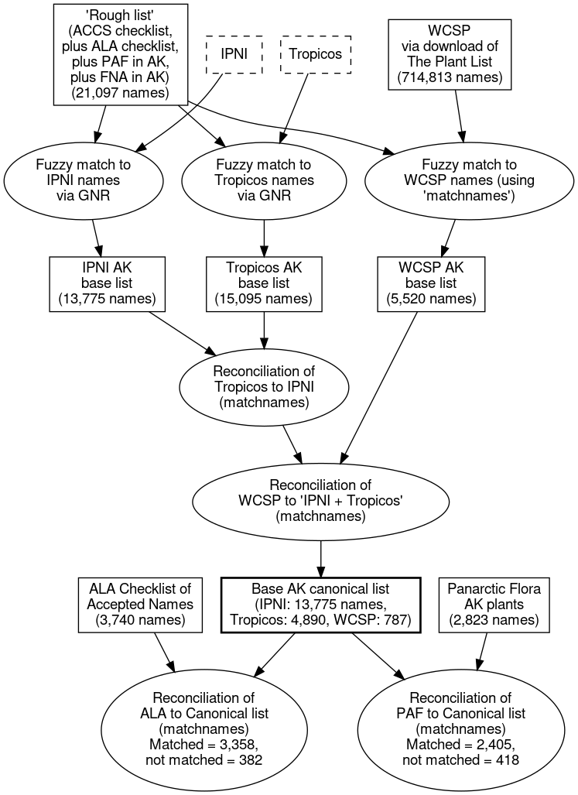

Blog 7: A canonical names list
Posted by Cam on 2019-05-01
Hi again! Back to names after our recent foray into phenotypes.
Having got hold of most of the names “engines”, taken them apart, laid out the parts, tried to jam them together several times, I’m now ready to document the details of assembling our integrated names list. Work over the past months has been “two steps forward, one-and-a-half steps back” as I learned about the complexities an limitations of each source database and the challenges of integrating them. Actually, I think that’s how the work will be all the way through this project! But I think I now have a good base canonical names list. This is the definition of our master list of names:
- Names from “core” online names resources (i.e., not derived; see blog 2),
- Sourced preferentially by the highest name resource “quality” (IPNI > Tropicos > World Checklist of Selected Plant Families),
- Internally reconciled to remove duplicates and orthographic variants,
- Each with a Globally Unique Identifier (with a live URL), and,
- Including almost all names applied to Alaskan plants (at least which are available online).
The list itself makes no note of status (currently accepted vs. synonym); that comes next.
Assembling the list
The steps to assemble this list were to:
- Obtain a comprehensive “rough list” of names for Alaskan plant names (new and old) from a variety of sources: the ACCS checklist (currently here), the ALA herbarium checklist assembled by Dave Murray and colleagues (here), the Alaskan names in the Panarctic Flora, and the Alaska names in FNA (thanks to the FNA/Botanical Knowledge Portal group at the Ottawa Research and Development Centre, AAFC).
- Find all the fuzzy-matching names in IPNI and Tropicos using GNR.
- Find all the fuzzy-matching names in the World Checklist of Selected Plant Families, via a download of The Plant List, and matching using
matchnames(Blog 3). - Reconcile the Tropicos names to the IPNI names using
matchnames, to remove the Tropicos duplicates of IPNI names. - Reconcile the WCSP names to the IPNI-plus-Tropicos names using
matchnames.
The resulting list contains 19,452 names (13,775 with an IPNI GUID, 4,890 with a Tropicos GUID, and 787 with a PlantList GUID). Here’s a diagram of the process:

Remember, this canonical list of names includes both accepted names and synonyms. As we move towards the goal of an accepted names, we can take our lists of names with taxonomic status, from, e.g., the ALA checklist and the PAF checklist, and reconcile these to the canonical list to get a “clean” name (i.e., as originally spelled, and with standardized authors) for each name we wish to accept and its synonyms. In this way, we were able to get clean names for 3,358 out of 3,740 names from the ALA checklist, and 2,405 out of 2,823 names from the Alaskan plants in PAF. The non-matching names are generally new names, or old, obscure names still not captured in mainline, online databases.
Access to code
In line with the project goals of maximum transparency and repeatability, all scripts and code needed to build this canonical list, and (later) to generate the accepted names and taxon concept databases are available via the project Github repo. Organizing principles include:
- A directory called dataflow contains directories for building the source data files (ACCS, ALA, FNA, PAF, and WCSP). Each sub-directory includes a copy of the generated list of names for that resource.
- A
LICENSEfile gives the licensing information for each of these source lists, should anyone want to use them. - The building of each base list is managed via a heavily documented
bashscript calledREADME.sh. - The canonical list (above) is generated via the
README.shscript in the canonical directory, with the output file calledcanon. The numbered steps (1 to 5) above correspond to the same numbered sections in theREADME.shscript. - (Theoretically) the entire set of source lists and canonical list can be refreshed by running the
README.shscript in the dataflow directory. - Many steps in this integration process require manual intervention (e.g., whenever human input is needed during runs of
matchnames). The automated scripts leave these steps out, substituting in pre-calculated files, and patches. The user is alerted to these manual phases as the scripts run, and the manual steps can be uncommented-out if the user wants to re-run these manually. - Software dependencies are given in the top-level README file.
OK, so I’m not expecting anyone to clone the repo and rebuild the data! But by building this documented resource I hope to answer any questions people may have downstream about exactly how the Flora of Alaska database was assembled.